2020

View-specifific Subspace Learning and Re-ranking for Semi-supervised Person
Re-identifification.
Pattern Recognition (PR), 2020
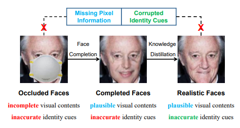
Look Through Masks: Towards Occluded Face Recognition with De-Occlusion Completion.
In ACM International Conference on Multimedia (MM), 2020.
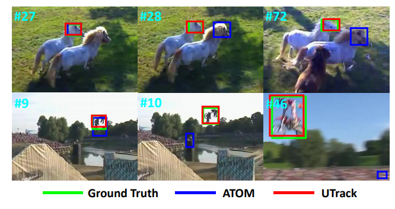
Accurate UAV Tracking with Distance-Injected Overlap Maximization.
In ACM International Conference on Multimedia (MM), 2020.
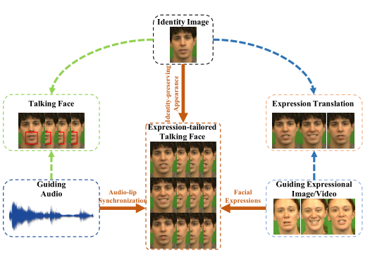
Talking Face Generation with Expression-Tailored Generative Adversarial Network.
In ACM International Conference on Multimedia (MM), 2020.
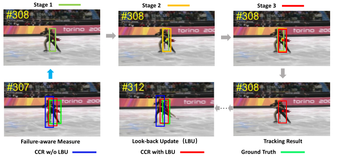
Cascaded Correlation Refinement for Robust Deep Tracking.
IEEE Transactions on Neural Networks and Learning Systems (TNNLS), 2020.
Occluded Face Recognition in the Wild by Identity-Diversity Inpainting.
IEEE Transactions on Circuits and Systems for Video Technology (TCSVT), 2020.

Attentive Deep Stitching and Quality Assessment for 360° Omnidirectional Images.
IEEE J. Sel. Top. Signal Process. 14(1): 209-221 (2020)
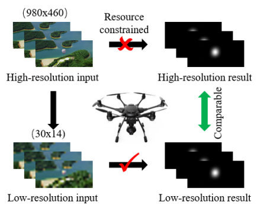
Spatiotemporal Knowledge Distillation for Efficient Estimation of Aerial Video Saliency.
IEEE Trans. Image Process. 29: 1902-1914 (2020)
Distilling Channels for Efficient Deep Tracking.
IEEE Trans. Image Process. 29: 2610-2621 (2020)
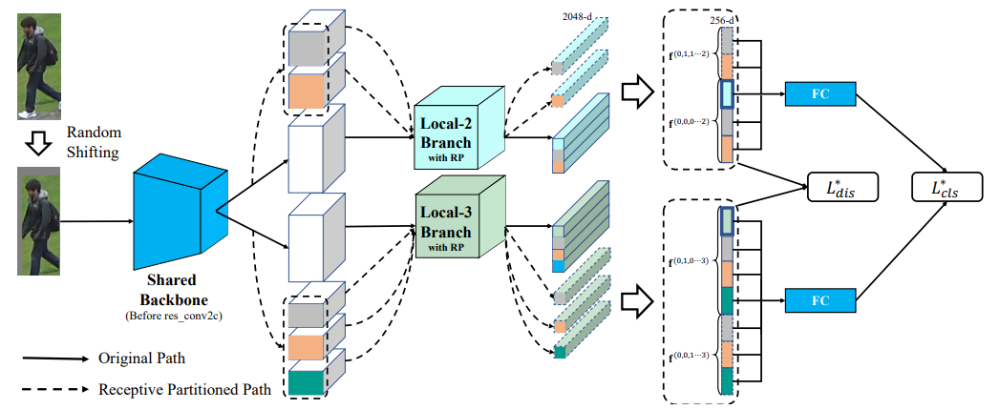
Receptive Multi-Granularity Representation for Person Re-Identification.
IEEE Trans. Image Process. 29: 6096-6109 (2020)
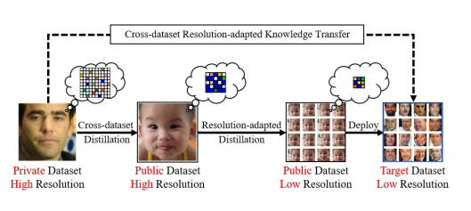
Efficient Low-Resolution Face Recognition via Bridge Distillation.
IEEE Trans. Image Process. 29: 6898-6908 (2020)
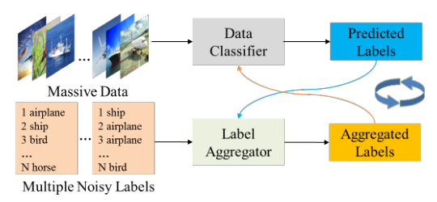
Coupled-View Deep Classifier Learning from Multiple Noisy Annotators.
AAAI 2020: 4667-4674
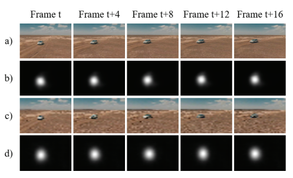
Ultrafast Video Attention Prediction with Coupled Knowledge Distillation.
AAAI 2020: 10802-10809

Accurate Temporal Action Proposal Generation with Relation-Aware Pyramid Network.
AAAI 2020: 10810-10817
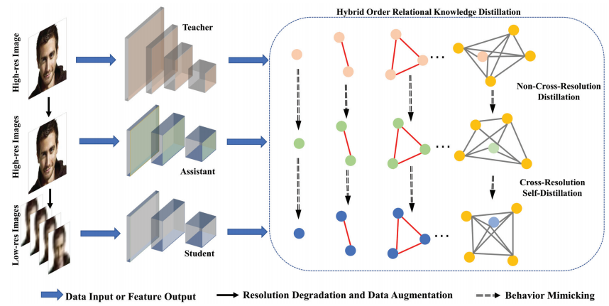
Look One and More: Distilling Hybrid Order Relational Knowledge for Cross-Resolution
Image Recognition.
AAAI 2020: 10845-10852
2019
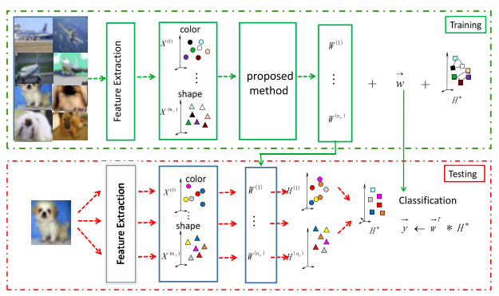
Discriminative Multiview Nonnegative Matrix Factorization for Classification.
IEEE Access 7: 60947-60956 (2019)
Adaptive Wavelet Filter With Edge Compensation for Remote Sensing Image Denoising.
IEEE Access 7: 91966-91979 (2019)
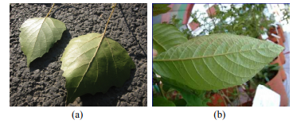
ILGNet: inception modules with connected local and global features for efficient image
aesthetic quality classification using domain adaptation.
IET Comput. Vis. 13(2): 206-212 (2019)


Fast cascade face detection with pyramid network.
Pattern Recognit. Lett. 119: 180-186 (2019)

Secure face retrieval for group mobile users.
Soft Comput. 23(23): 12813-12820 (2019)
Low-Resolution Face Recognition in the Wild via Selective Knowledge Distillation.
IEEE Trans. Image Process. 28(4): 2051-2062 (2019)
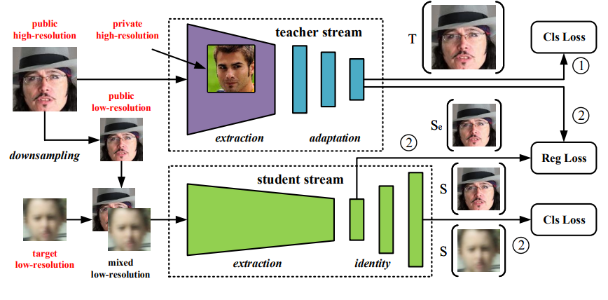
Low-Resolution Face Recognition in the Wild with Mixed-Domain Distillation.
BigMM 2019: 148-154
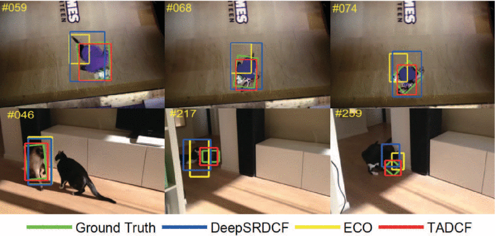
Robust Deep Tracking with Two-step Augmentation Discriminative Correlation Filters.
ICME 2019: 1774-1779
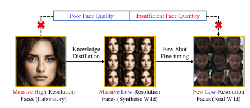
Fewer-Shots and Lower-Resolutions: Towards Ultrafast Face Recognition in the Wild.
ACM Multimedia 2019: 229-237
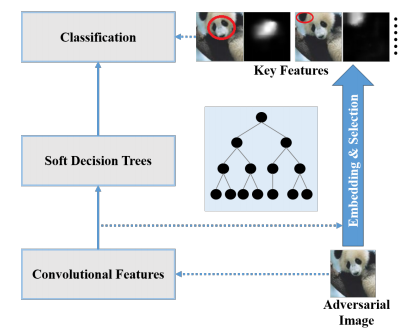
Defending Against Adversarial Examples via Soft Decision Trees Embedding.
ACM Multimedia 2019: 2106-2114
Occluded Face Recognition by Identity-Preserving Inpainting.
Cognitive Internet of Things 2019: 427-437
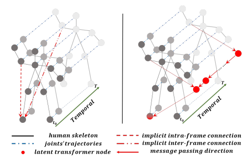
Focusing and Diffusion: Bidirectional Attentive Graph Convolutional Networks for
Skeleton-based Action Recognition.
CoRR abs/1912.11521 (2019)
2018

Compressing and Accelerating Neural Network for Facial Point Localization.
Cogn. Comput. 10(2): 359-367 (2018)
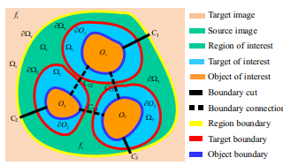
Image editing by object-aware optimal boundary searching and mixed-domain composition.
Comput. Vis. Media 4(1): 71-82 (2018)

Enhancing heterogeneous similarity estimation via neighborhood reversibility.
Multim. Tools Appl. 77(1): 1437-1452 (2018)

Color image encryption in non-RGB color spaces.
Multim. Tools Appl. 77(12): 15851-15873 (2018)
Predicting Aesthetic Score Distribution Through Cumulative Jensen-Shannon Divergence.
AAAI 2018: 77-84
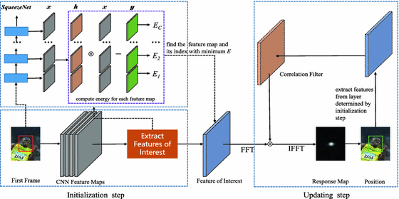
Extracting Features of Interest from Small Deep Networks for Efficient Visual Tracking.
PCM (1) 2018: 414-425

Predicting Aesthetic Radar Map Using a Hierarchical Multi-task Network.
PRCV (2) 2018: 41-50
Error analysis and topology modifications of a self-organizing incremental neural
network.
SAC 2018: 487-494
2017
3D textured model encryption via 3D Lu chaotic mapping.
Sci. China Inf. Sci. 60(12): 122107:1-122107:9 (2017)

Geometry-Based Global Alignment for GSMS Remote Sensing Images.
Remote. Sens. 9(6): 587 (2017)
Try Everything: Detecting Occluded Faces by Cascading Outrageous Proposal Generation and
Deep Convolutional Neural Network.
BigMM 2017: 193-196
Detecting Masked Faces in the Wild with LLE-CNNs.
CVPR 2017: 426-434
Discriminative Learning from Selective Recommendation and Its Application in AdaBoost.
ICCS 2017: 394-403
Compressing deep neural networks for efficient visual inference.
ICME 2017: 667-672
Efficient privacy preserving Viola-Jones type object detection via random base image
representation.
ICME 2017: 673-678
Poster abstract: MicroBrain: Compressing deep neural networks for energy-efficient
visual inference service.
INFOCOM Workshops 2017: 1000-1001
Privacy Preserving Face Retrieval in the Cloud for Mobile Users.
CoRR abs/1708.02872 (2017)

Single Reference Image based Scene Relighting via Material Guided Filtering.
CoRR abs/1708.07066 (2017)
Before

Learning multi-channel correlation filter bank for eye localization.
Neurocomputing 173: 418-424 (2016)

Global image completion with joint sparse patch selection and optimal seam synthesis.
Signal Process. 124: 147-155 (2016)
Traffic Sign Recognition Based on Attribute-Refinement Cascaded Convolutional Neural
Networks.
PCM (1) 2016: 201-210
Negative-Supervised Cascaded Deep Learning for Traffic Sign Classification.
CCCV (1) 2015: 249-257
Target Domain Adaptation for Face Detection in a Smart Camera Network with Peer-to-Peer
Communications.
GLOBECOM 2015: 1-6
[BibTex]
Centroid location algorithm in three dimensions based on big data.
ICIMCS 2015: 40:1-40:6
Abnormal event detection via adaptive cascade dictionary learning.
ICIP 2015: 847-851
Eye Localization Based on Multi-Channel Correlation Filter Bank.
CCPR (1) 2014: 325-334
Image Completion Using Global Patch Matching and Optimal Seam Synthesis.
ICPR 2014: 871-876
Interactive sketch template creation from realistic pictures for tracing applications.
ICIMCS 2009: 119-122
A unified gradient domain method for seamless image processing.
ICIP 2009: 1361-1364